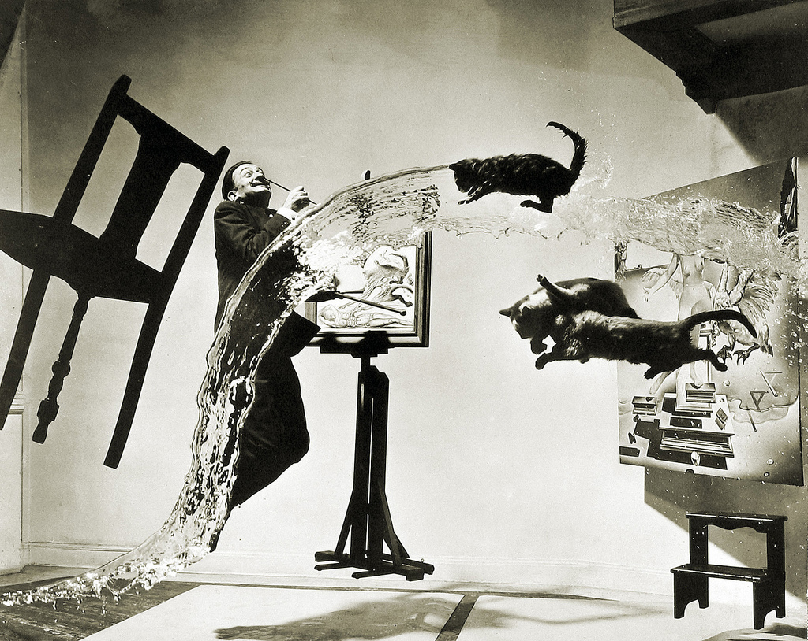

Art
Artists
Salvador Dalí
Dalí was a skilled draftsman, best known for the striking and bizarre images in his surrealist work. His painterly skills are often attributed tothe influence of Renaissance masters. His best-known work, The Persistence of Memory, was completed in August 1931. Dalí’s expansive artistic répertoire included film, sculpture, and photography, in collaboration with a range of artists in a variety of media.
